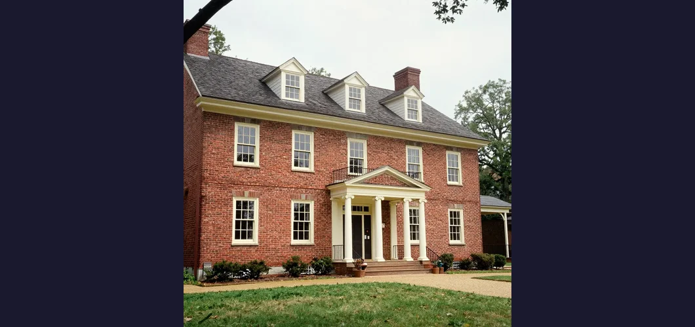

Wilmer McLean: The Man Who Couldn't Escape the Civil War

It was July 21, 1861, in Manassas, Virginia. A Union cannon shell crashed through the kitchen chimney of a farmhouse. It landed in the fireplace. Pots, pans, and a dinner meant for a Confederate general flew across the floor.
The house belonged to Wilmer McLean. He was a wholesale grocer from Virginia, born in 1814 and died in 1882. The general who was waiting for his supper was P.G.T. Beauregard. He and his staff were using the house as their headquarters. Beauregard later wrote that the scene had “a comical effect.” But it surely did not seem funny to McLean, whose home had just turned into a battlefield.
The shell was part of the First Battle of Bull Run, the first major land battle of the American Civil War. It began on McLean’s farm, the Yorkshire Plantation. Four years later, McLean had moved his family 120 miles south, to the quiet village of Appomattox Court House. He wanted to get away from the fighting. But the war found him again.
On April 9, 1865, General Robert E. Lee gave up to General Ulysses S. Grant in McLean’s parlor. That ended the bloodiest war in American history. The war that began with a shell in his kitchen ended with a signature in his living room. McLean is said to have put it this way: “The war began in my front yard and ended in my front parlor.”
Wilmer McLean was not a general, a politician, or a statesman. He was a merchant. He was a wholesale grocer and sugar broker, which means he bought and sold goods in bulk in the wartime South. He was 47 when the war began, too old to fight. He had no wish to take part in it.
In 1853 he married a wealthy widow named Virginia Mason. They settled on the Yorkshire Plantation near Manassas and raised a family. Their life seemed comfortable and ordinary. But the war had a way of finding ordinary people and pulling them in. McLean’s story is more than a curiosity. It shows that when a nation tears itself apart, nobody can stay untouched, not even a quiet grocer in the Virginia countryside.
The Civil War broke out in April 1861. By then McLean had lived on the Yorkshire Plantation for nearly ten years. He got it through his marriage to Virginia Mason. It was a working farm in Prince William County. It lay near the crossing of two important railroads and near a winding stream called Bull Run.
By all accounts it was a peaceful place, with rolling farmland, quiet roads, and the slow pace of country life. McLean was a retired major in the Virginia militia. He sided with the Confederate cause but was too old to serve. Instead he helped the war effort through his business. He sold sugar and other goods to the Confederate Army.
The trouble began in June 1861. General Beauregard came to Manassas and set up his headquarters. He was a showy officer born in Louisiana, and he had led the attack on Fort Sumter that April. Beauregard chose McLean’s house, the finest in the area, as his command post. McLean moved his family to safety and let the officers use the property.
On July 18, 1861, the first fighting of what became the First Battle of Bull Run took place on McLean’s farm. Union troops under General Irvin McDowell met Confederate troops along Bull Run Creek. The full battle broke out on July 21, and the fighting swept over McLean’s land.
Union cannons aimed at the house. They guessed correctly that it was a Confederate headquarters. In the shelling, a cannonball dropped down the kitchen chimney and landed in the fireplace. It ruined the dinner that Beauregard and his staff were about to eat.
The battle was a chaotic, bloody Confederate victory. It shocked both sides with its fierceness. Afterward McLean’s house became a field hospital, which is a place to treat wounded soldiers, and a military prison. The wounded were treated in his rooms. Confederate officers ate at his table. Union prisoners were kept on his grounds. A peaceful farm had become a place of great suffering.
Having his home turned into a battlefield, hospital, and prison was enough for McLean. By 1862, a second Battle of Bull Run was raging near his property. He decided he had had enough. He moved his family about 120 miles southwest to the tiny village of Appomattox Court House, in Appomattox County, Virginia.
The village was named for its courthouse. It was a quiet, faraway place on the Lynchburg-Richmond Stage Road. It was far from the big battlefields and far from the rail junctions that drew armies. McLean hoped it was far from the war too. He settled his family into a comfortable two-story house on the main road. He went back to his work as a sugar broker, trading with the Confederate Army. He tried to keep life as normal as he could in a nation that was falling apart.
For nearly three years, his gamble seemed to work. The war roared across Virginia, at Antietam, Fredericksburg, Chancellorsville, Gettysburg, the Wilderness, Spotsylvania, and Petersburg. But Appomattox Court House was mostly left alone.
By spring 1865, Lee’s Army of Northern Virginia was almost finished. Grant’s much larger forces had it cornered. Lee’s men were starving, out of ammunition, and cut off from supplies. On April 8, they retreated west through Appomattox County, with Grant’s army chasing them. The tiny village was once more in the path of history.
On the morning of April 9, 1865, Lee’s army made one last desperate try to break through the Union lines west of the village. It failed. Lee sent a message to Grant asking to meet and talk about surrender. Grant had a terrible headache. He got the message near the Appomattox River, and he felt the headache lift.
The two generals needed a calm, handy place to meet. Colonel Charles Marshall, Lee’s military secretary, rode into the village to find a house. He came to Wilmer McLean. McLean’s house was one of the finest in the village and stood right on the main road. Marshall asked if the surrender could take place there. McLean had spent four years trying to avoid the war. He said yes.
Lee arrived first. He wore his finest uniform and came with Colonel Marshall. Grant came soon after. He wore a muddy soldier’s coat with a general’s shoulder straps sewn on. It was a sharp contrast to Lee’s neat dress. With Grant was his military secretary, Colonel Ely S. Parker, a Seneca Indian, who wrote out the final copy of the surrender terms.
Several of Grant’s staff were also there, including General Edward Ord, General Philip Sheridan, and General George Armstrong Custer. The meeting was friendly. Grant and Lee had served together in the Mexican-American War. They talked briefly about old times before they got down to business.
Grant wrote out generous terms. Confederate officers could keep their sidearms and horses. Lee signed at about 4:00 PM. When he came out and mounted his horse, Traveller, Union soldiers began to cheer. Grant quickly made them stop. “The war is over,” Grant said. “The rebels are our countrymen again.”
As soon as the meeting ended, the McLean House was stripped of its things. This was not the work of thieves. It was the work of Union officers who knew they had just seen a great moment in American history. They wanted keepsakes.
General Ord took the table where Lee had sat. General Sheridan bought the table where Grant had sat. He paid $20 in gold. He quickly gave it to General Custer as a gift for Custer’s wife, Libbie. Custer later rode through the Union camps waving the table like a trophy.
Officers took chairs, inkstands, paperweights, candlesticks, and anything else they could carry. One officer is said to have taken the pencil Lee had used to correct the surrender terms. Within hours, McLean’s parlor was almost bare. He had opened his home to help, and the winners carried off his furniture.
The items later ended up in museums and private collections across the country. The table where Lee signed is now in the Chicago History Museum. The table where Grant sat is in the Smithsonian National Museum of American History. Other items are at the West Point Museum and in private hands.
The McLean House itself was stripped and left empty after the war. It fell into disrepair and was taken apart in the 1890s. An investor tried to have it rebuilt as a tourist attraction at the Chicago World’s Fair, but the plan fell through. The pieces were left in a pile and slowly scattered.
In the 1930s and 1940s, the National Park Service began to rebuild the house. It used photographs and detailed descriptions to bring back the house as it looked in 1865. The rebuilt house opened to visitors in April 1950. It is now the center of Appomattox Court House National Historical Park.
The end of the war did not bring McLean peace or money. The surrender at his house left him poorer than before. He fell deep into debt. During the war he had made money by dealing in sugar and other goods. After the war, that business collapsed in the new economy. He had borrowed heavily against his properties and could not repay the loans.
In 1867, McLean could not pay his mortgage and had to give up the Appomattox house. He moved his family to Alexandria, Virginia. There he took a job with the Internal Revenue Service, the tax office of the US government. It was an ironic fate. He had supplied the Confederate Army, and now he worked for the government that had beaten it.
McLean lived the rest of his life in quiet obscurity. He died on June 5, 1882, at the age of 68. He was buried in St. Paul’s Episcopal Cemetery in Alexandria.
His story is so neat and balanced that it seems almost like a legend. The war began in his front yard with a cannonball. It ended in his parlor with a pen. He tried to escape the war by moving 120 miles south. But history had already booked his living room for its grand finale.
McLean was not a hero or a villain. He was an ordinary man in extraordinary times. His two homes were the bookends of the most painful event in American history. His money troubles after the war add a bitter note. The man who hosted the most important military meeting in American history was left with nothing. His furniture was stolen or sold for next to nothing. His properties were lost to debt. His last years were spent as a minor employee of the government that had beaten the cause he backed.
Yet his legacy lives on in ways he could never have guessed. The rebuilt McLean House at Appomattox is one of the most visited historic sites in the United States. Wilmer McLean could not escape history. But in the end, history could not forget him.
References & Further Reading
Wikipedia: Wilmer McLean — Comprehensive biography covering both Bull Run and Appomattox connections
National Park Service: Wilmer McLean — Official NPS biography with details on both properties
Wikipedia: First Battle of Bull Run — The battle that began on McLean's property on July 21, 1861
Wikipedia: Appomattox Campaign — The final campaign of the Civil War in Virginia
📚 Recommended Reading: Appomattox (on Amazon) — As an Amazon Associate, we earn from qualifying purchases.
Editorial note: historical narratives are continuously refined as new primary sources and scholarly analyses emerge. See our Editorial Policy.